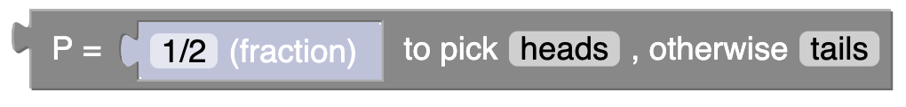
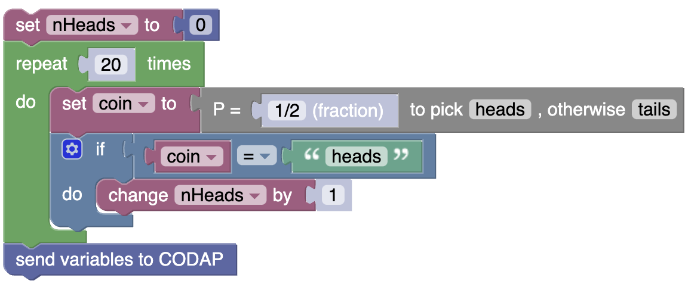
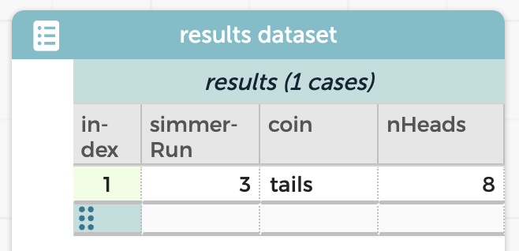

Simmer Guide
Fair and unfair coins
We have been rolling dice; what about flipping coins?
In the Random section of the toolbox, you will see this block:

This will “emit” either heads or tails with a probability of 1/2. So if you want to flip a coin 20 times and count the number of heads, you might write this program:

Make this program and run it. You can use the live example below; we have littered it with some of the ingredients you will need. Go to the Variables section of the toolbox to make any additional variables.
Your data table should look something like this:

In this particular run, there were 8 heads in the 20 tosses of the coin. You can run it repeatedly to see more data.
It’s obvious how to connect blocks in our “Blockly” window. But it can be a challenge, at first, to disconnect blocks, or generally fix things that go wrong.
- If you drag a block, all of its connected “children” come along…
- …but it gets separated from its parents.
Therefore, if B is under (or to the right of) A, drag B to disconnect them.
- To delete a block, drag it to the trash—or just select it and press the delete key.
Understanding the program
See if you can understand the program to do this. How does it work? Here are things to think about and do to make sure you understand it:
- There is a “loop” that runs 20 times. It’s green. What is it for?
- There is a variable called
nHeads. We set its value (0) outside the loop. What would happen if you moved that statement (set nHeads to 0) inside the loop? Try it and see. - There is an “
if” statement in blue. What does that do? - What would be different if you changed the string in the
ifstatement from"heads"to"tails"? - There is a spot where
nHeadsgets incremented. What does that mean? - What happens if you eliminate that “increment” statement from the program?
- Where can you find the
ifstatement in the toolbox? - The statement to
send variables to CODAPis outside the loop. What would happen if you put it inside the loop? As usual, try it and see!
Try to make it your goal to be able to construct this program (or one like it) without any help. Will you always get it right the first time? No! Of course not! None of us do! But you can run it and see what goes wrong, and fix it. Blockly and CODAP do not care how many tries it takes. They do not judge.
Extending your mighty coin powers
The current program flips a fair coin 20 times and records the number of heads. Here are some things to try:
Change the program so that it does those 20 flips … 100 times. That is, a total of 2000 flips, but in sets of 20, counting the number of heads each time. You should wind up with 100 cases in your table, and you can plot a distribution. You can ask, how unusual is it to get 16 heads in 20 tosses?
Change that program so that the probability of heads is 3/4. Now how unusual is 16 heads?
Make the probability a variable instead of a constant. Make a simulation that flips a fair coin 400 times and then flips a loaded coin 400 times. Compare the number of heads from the fair coin to the number of heads from the loaded coin. Do a randomization test to see if it’s plausible that the difference you see could arise by chance.